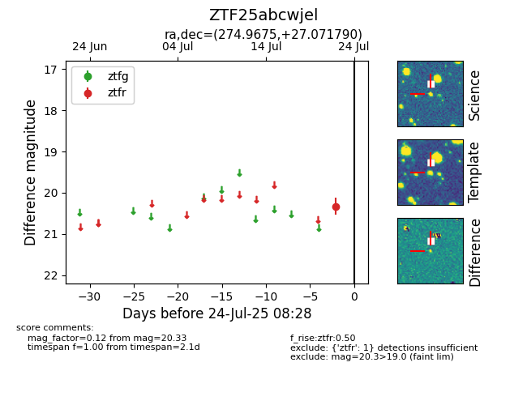

Target ZTF25abcwjel at 2025-07-24 08:28, see:
FINK: fink-portal.org/ZTF25abcwjel
Lasair: lasair-ztf.lsst.ac.uk/objects/ZTF25abcwjel
ALeRCE: alerce.online/object/ZTF25abcwjel
alt names
ZTF25abcwjel (ztf,fink)
coordinates:
equatorial (ra, dec) = (274.9675,+27.07179)
galactic (l, b) = (54.5364,+18.44129)
photometry
last ztfr=20.33
1 ztfr detections
